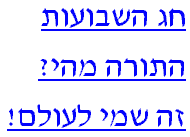
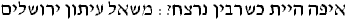

Sin and Atonement |
|||
Why We Don't Accept Christianity |
Testimonials |
Miscellaneous |
 |

), Hebrew Newspaper, Shortly After Rabin's AssasinationCooing Soon:
Submitted by: "LIGHT OF ISRAEL", a fraternity dedicated to bringing the message of the Hebrew Scriptures to all men.
The Light of Israel was written by Mordecai Alfandari (1929-1999), of blessed memory. Please leave your thoughts and comments about the Light of Israel on our guestbook.
The material published by the Light of Israel Tract Center was written or distributed by Hacham Mordecai Alfandari, of blessed memory, over a period of some fifty years. About half the tracts presented here were readily available in Hacham Alfandari's personal collection, while the others were restored by friends, disciples, and loyal readers. If you have tracts written or distributed by Mordecai Alfandari which you do not see here, please contact us at loi@karaite-korner.org. The Light of Israel Tract Center wishes to thank the following persons and institutions for providing us with, or bringing to our attention, many previosuly lost tracts and works:
|
| Copyright © 1998-2000 by The Karaite Korner |